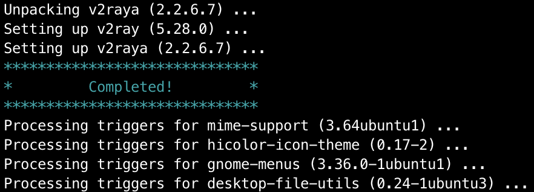
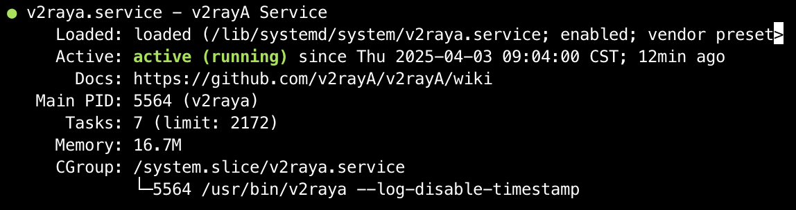

因为个人的阿里云国内服务器偶遇运营商垃圾跨境节点导致连接github及其不稳定，所以有了这篇帖子；
环境
操作系统：Ubuntu 20.04.6 LTS (GNU/Linux 5.4.0-202-generic x86_64)
云服务器：阿里云ESC
代理客户端：V2RayA，优点是适用于无图形化的操作系统；
V2RayA 简介
一个易用而强大的，跨平台的 V2Ray 客户端
使用 Golang 和 Vue.js 编写，运行时没有任何外部依赖库，可跨平台运行，借助任意一款浏览器均可操作；
对于无图形界面的操作系统，打开它提供的 Web UI 就能完成配置工作，对于远程服务器及其友好；
V2RayA 安装
演示通过软件源安装，其他安装方法和操作系统请参考：请选择你的英雄
添加公钥
wget -qO - https://apt.v2raya.org/key/public-key.asc | sudo tee /etc/apt/keyrings/v2raya.asc添加 V2RayA 软件源
echo "deb [signed-by=/etc/apt/keyrings/v2raya.asc] https://apt.v2raya.org/ v2raya main" | sudo tee /etc/apt/sources.list.d/v2raya.list
sudo apt update安装 V2RayA
sudo apt install v2raya v2ray出现以下信息，说明安装成功：
启动 V2RayA
启动 V2RayA
sudo systemctl start v2raya.service设置 V2RayA 为开机自启动
sudo systemctl enable v2raya.service检查V2RayA 启动状态
sudo systemctl status v2raya.service如果看到类似以下信息，说明启动成功：